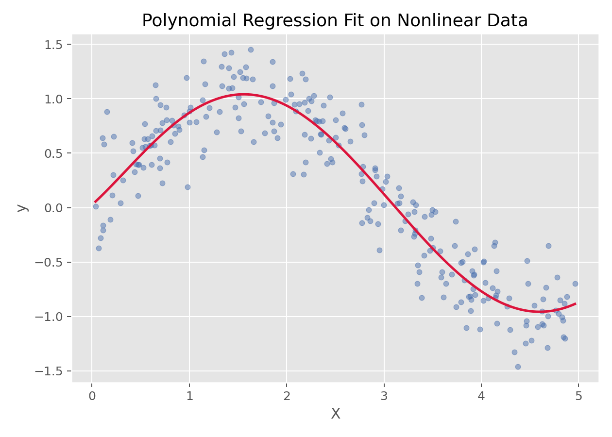

回归与广义线性模型 · 03·06
多项式回归
Polynomial Regression
多项式回归（Polynomial Regression）
§1
方法概览
1.1 定义
多项式回归是在普通线性回归的基础上加入自变量的高次项，从而用一条更灵活的曲线来拟合非线性关系。
1.2 它主要解决什么问题
- 研究问题：当变量关系明显不是直线而是弯曲趋势时，如何在仍保持较好可解释性的前提下做回归建模。
- 适用任务：平滑非线性关系拟合、低维连续结局预测。
- 常见医学场景：剂量-反应曲线、年龄与风险评分的非线性变化、某些生物标志物的 U 型或弯曲关系。
1.3 直觉理解
多项式回归本质上还是线性回归，只不过把原始变量扩展成了 x, x^2, x^3 ...。它不是改了“求解方式”，而是改了“输入特征表示”。
§2
数学形式
2.1 核心公式
$$ y = \beta_0 + \beta_1 x + \beta_2 x^2 + \cdots + \beta_d x^d + \epsilon $$
矩阵形式下仍可写作：
$$ \mathbf{y} = \mathbf{X}\boldsymbol{\beta} + \boldsymbol{\epsilon} $$
其中设计矩阵 $\mathbf{X}$ 包含多项式扩展后的列。
2.2 参数或统计量含义
- $d$：多项式阶数。
- $\beta_j$：第 $j$ 次项的系数。
- 高次项：负责给模型引入弯曲能力。
2.3 关键假设
- 结局为连续型。
- 非线性关系可以被低到中等阶的多项式近似。
- 阶数不能过高，否则容易过拟合和数值不稳定。
§3
数据形式与输入输出
3.1 适合的数据形式
- 自变量类型：一个或少数几个连续变量最合适。
- 因变量类型：连续型。
- 数据结构：宽表数据，低维连续变量回归。
- 是否适合高维数据：不适合默认用于高维。
- 是否适合缺失较多数据：需先处理缺失值。
- 是否适合删失数据：不适合。
- 是否适合重复测量数据：不直接适合。
3.2 示例表格
一个典型的一维非线性拟合表格如下：
| X | y |
|---|---|
| 0.026 | 0.045 |
| 1.126 | 0.735 |
| 1.392 | 0.979 |
| 1.501 | 1.123 |
| 1.515 | 0.756 |
| 2.340 | 0.636 |
3.3 输入与产出
输入
- 输入数据：连续型结局和一个或多个连续特征。
- 关键变量：多项式阶数
degree。 - 需要预处理的内容：特征扩展、必要时标准化、训练测试集划分。
产出
- 模型对象/统计结果：多项式项系数、最佳阶数、预测曲线。
- 参数估计：各阶次项的系数。
- 预测结果：连续型预测值和拟合曲线。
- 不确定性指标：测试集误差、交叉验证误差、过拟合风险。
§4
适用场景
- 适合：低维、平滑的非线性关系。
- 不适合：高维复杂非线性、大样本高噪声且局部结构复杂的场景。
- 使用前需要特别检查的点：阶数选择、过拟合、数值稳定性。
§5
实现
常用包：
scikit-learn
from sklearn.pipeline import make_pipeline
from sklearn.preprocessing import PolynomialFeatures
from sklearn.linear_model import LinearRegression
fit = make_pipeline(
PolynomialFeatures(degree=3, include_bias=False),
LinearRegression()
)
fit.fit(X_train, y_train)
y_pred = fit.predict(X_test)
常用包：
stats
fit <- lm(y ~ poly(x, degree = 3, raw = TRUE), data = df)
summary(fit)
§6
结果如何解释
- 核心结果看什么：曲线形状、预测性能、阶数是否过高。
- 每个主要参数如何解释：单个高次项系数通常不如整体曲线形状重要。
- 临床或医学意义如何表达：更适合解释“趋势形状”，而不是逐个高次项系数。
- 常见误读：高 $R^2$ 不一定是好事，可能只是高阶过拟合。
§7
推荐可视化
- 原始散点图 + 拟合曲线。
- 不同阶数模型对比图。
- 残差图。
7.1 图像示例
下图展示一组非线性数据上的多项式回归拟合结果，体现了它对弯曲趋势的刻画能力。

§8
优势、局限与常见坑
优势
- 简单、直观、易解释。
- 能处理平滑非线性关系。
- 与线性回归求解框架兼容。
局限
- 高阶时容易过拟合。
- 数值稳定性会变差。
- 对高维问题不友好。
常见坑
- 盲目提高阶数。
- 不做验证就只看训练集拟合效果。
- 把局部复杂非线性都试图交给多项式处理。
§9
与相近方法的区别
- 和线性回归的区别：多项式回归通过特征扩展引入非线性。
- 和样条回归的区别：多项式回归是全局曲线，样条更适合局部灵活变化。
- 和 SVR 的区别：SVR 更适合复杂非线性，但解释性更弱。
§10
医学研究中的典型应用
- 剂量-反应关系拟合。
- 年龄与某连续风险指标之间的弯曲关系建模。
- 低维连续变量的非线性预测。
§11
相关方法
§12
参考资料
- Hastie T, Tibshirani R, Friedman J. The Elements of Statistical Learning. 2nd ed. Springer; 2009.
- scikit-learn Developers.
sklearn.preprocessing.PolynomialFeatures. scikit-learn API Reference. https://scikit-learn.org/stable/modules/generated/sklearn.preprocessing.PolynomialFeatures.html （访问日期：2026-07-02） - R Core Team.
poly. R Manual. https://stat.ethz.ch/R-manual/R-devel/library/stats/html/poly.html （访问日期：2026-07-02）
— 黑盒词典 · 03·06 —